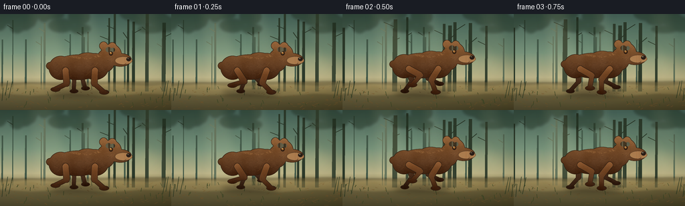
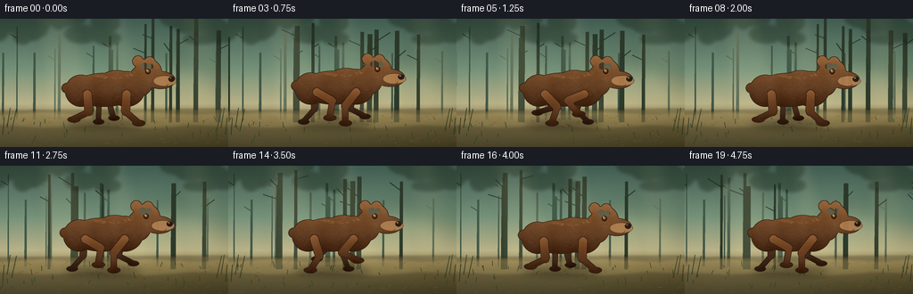
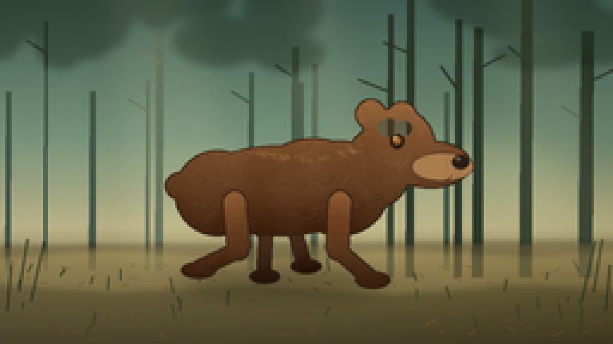
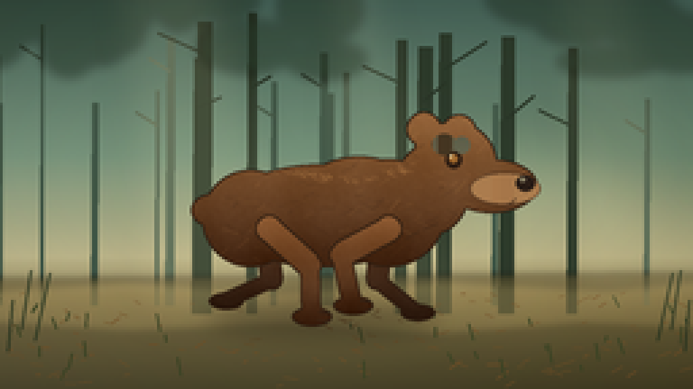
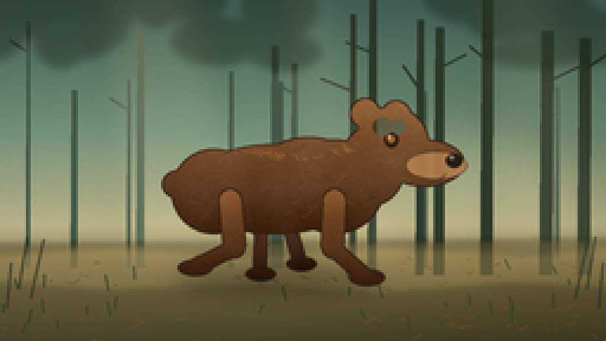
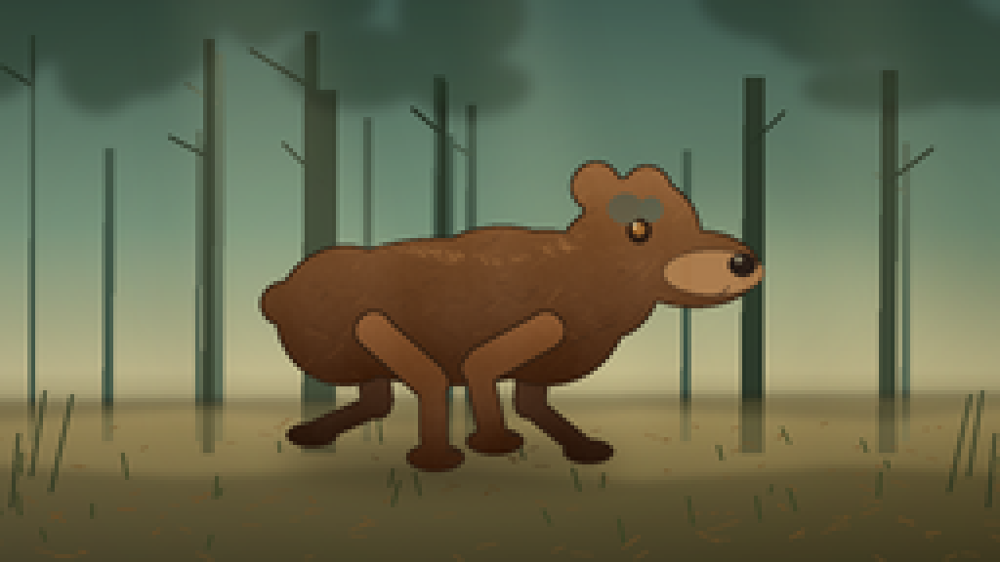
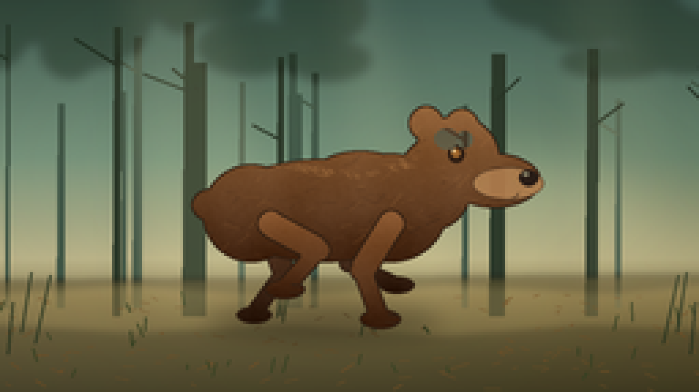
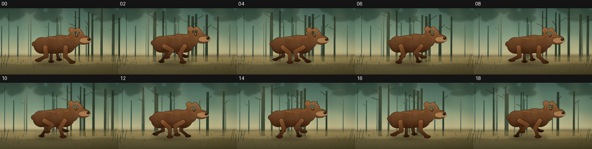
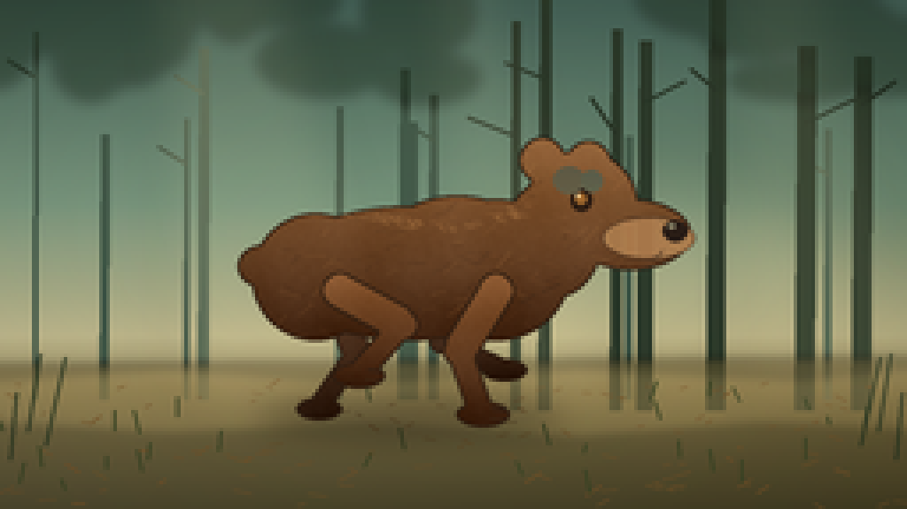

CODING AGENTS AS PIXEL WORLD MODELS
traex/DeepSeek-V4.1-Flash · instance_preservation_0012
点击播放 · 原生 RGB 像素
逐轮保存的候选
回放视频、检查图与代码变化。
每份候选均可单独播放。实际图片检查记录在下方工具轨迹中。
候选 01播放与检查图
点击播放 · 原生 RGB 像素


展开代码变化
--- 上一保存版本
+++ 本次保存版本
@@ -0,0 +1,484 @@
+from __future__ import annotations
+
+import json
+import math
+from pathlib import Path
+
+import numpy as np
+from PIL import Image, ImageDraw, ImageFilter
+
+import artifact_io
+
+
+ROOT = Path(__file__).resolve().parent
+SPEC = json.loads((ROOT / "task_spec.json").read_text())
+WIDTH = int(SPEC["width"])
+HEIGHT = int(SPEC["height"])
+FRAME_COUNT = int(SPEC["frames"])
+FPS = float(SPEC["fps"])
+
+# Render large, then downsample. This gives the tiny output image soft,
+# convincing edges without relying on external rendering software.
+SS = 4
+RW, RH = WIDTH * SS, HEIGHT * SS
+
+
+def pt(x: float, y: float) -> tuple[int, int]:
+ return (int(round(x * SS)), int(round(y * SS)))
+
+
+def box(x0: float, y0: float, x1: float, y1: float) -> tuple[int, int, int, int]:
+ return (int(round(x0 * SS)), int(round(y0 * SS)), int(round(x1 * SS)), int(round(y1 * SS)))
+
+
+def rgba(color: tuple[int, int, int], alpha: int = 255) -> tuple[int, int, int, int]:
+ return color + (alpha,)
+
+
+def smoothstep(edge0: float, edge1: float, value: np.ndarray) -> np.ndarray:
+ t = np.clip((value - edge0) / (edge1 - edge0), 0.0, 1.0)
+ return t * t * (3.0 - 2.0 * t)
+
+
+def colorize_mask(
+ mask: Image.Image,
+ top_color: tuple[int, int, int],
+ bottom_color: tuple[int, int, int],
+ seed: int,
+ outline: bool = True,
+) -> Image.Image:
+ """Turn a high-resolution silhouette into shaded, slightly furry pixels."""
+ alpha = np.asarray(mask, dtype=np.float32) / 255.0
+ h, w = alpha.shape
+ yy, xx = np.mgrid[0:h, 0:w].astype(np.float32)
+ active_y = np.where(alpha > 0.2, yy, np.nan)
+ if np.all(np.isnan(active_y)):
+ return Image.new("RGBA", (w, h), (0, 0, 0, 0))
+ y0, y1 = np.nanmin(active_y), np.nanmax(active_y)
+ v = np.clip((yy - y0) / max(1.0, y1 - y0), 0.0, 1.0)
+
+ rng = np.random.default_rng(seed)
+ noise = rng.normal(0.0, 1.0, (h // 2, w // 2)).astype(np.float32)
+ noise_img = Image.fromarray(np.uint8(np.clip(noise * 38 + 128, 0, 255)))
+ noise_img = noise_img.resize((w, h), Image.Resampling.BICUBIC).filter(ImageFilter.GaussianBlur(2.0))
+ fine = (np.asarray(noise_img, dtype=np.float32) - 128.0) / 128.0
+ streaks = (
+ 0.55 * np.sin(xx * 0.042 + yy * 0.016)
+ + 0.30 * np.sin(xx * 0.091 - yy * 0.023)
+ + 0.20 * np.sin(xx * 0.019 + yy * 0.071)
+ )
+ light = 11.0 * fine + 4.5 * streaks
+ light -= 13.0 * smoothstep(0.60, 1.0, v)
+ light += 10.0 * (1.0 - smoothstep(0.0, 0.34, v))
+
+ top = np.asarray(top_color, dtype=np.float32)
+ bottom = np.asarray(bottom_color, dtype=np.float32)
+ grad = top[None, None, :] * (1.0 - v[:, :, None]) + bottom[None, None, :] * v[:, :, None]
+ rgb = np.clip(grad + light[:, :, None], 0, 255)
+ out = np.dstack([rgb, alpha * 255.0]).astype(np.uint8)
+ image = Image.fromarray(out, "RGBA")
+
+ if outline:
+ a = image.getchannel("A")
+ eroded = a.filter(ImageFilter.MinFilter(5))
+ edge = np.clip(np.asarray(a, dtype=np.float32) - np.asarray(eroded, dtype=np.float32), 0, 255)
+ arr = np.asarray(image).copy()
+ edge_strength = np.clip(edge / 255.0 * 1.25, 0, 1)[:, :, None]
+ dark = np.array([43, 29, 20], dtype=np.float32)
+ arr[:, :, :3] = np.clip(arr[:, :, :3] * (1.0 - edge_strength) + dark * edge_strength, 0, 255)
+ image = Image.fromarray(arr, "RGBA")
+ return image
+
+
+def draw_tree(draw: ImageDraw.ImageDraw, x: float, y_top: float, y_bottom: float, width: float,
+ color: tuple[int, int, int, int]) -> None:
+ lean = width * 0.25
+ draw.polygon(
+ [
+ pt(x - width * 0.5, y_bottom),
+ pt(x - width * 0.30, y_top),
+ pt(x + width * 0.30 + lean, y_top),
+ pt(x + width * 0.5, y_bottom),
+ ],
+ fill=color,
+ )
+
+
+def make_background(frame_index: int) -> Image.Image:
+ stops = [
+ (0.0, (67, 99, 91)),
+ (0.40, (112, 143, 121)),
+ (0.66, (183, 178, 136)),
+ (0.76, (137, 126, 83)),
+ (1.0, (47, 51, 34)),
+ ]
+ ys = np.linspace(0.0, 1.0, RH, dtype=np.float32)
+ colors = np.zeros((RH, 3), dtype=np.float32)
+ for channel in range(3):
+ colors[:, channel] = np.interp(ys, [s[0] for s in stops], [s[1][channel] for s in stops])
+ base = np.repeat(colors[:, None, :], RW, axis=1)
+ xx = np.linspace(0.0, 1.0, RW, dtype=np.float32)[None, :]
+ base += (18.0 * (1.0 - xx) - 8.0 * xx)[:, :, None] * (ys[:, None, None] ** 0.7)
+ image = Image.fromarray(np.clip(base, 0, 255).astype(np.uint8), "RGB").convert("RGBA")
+ draw = ImageDraw.Draw(image, "RGBA")
+
+ # Soft mist layers and a low sun behind the forest.
+ haze = Image.new("RGBA", (RW, RH), (0, 0, 0, 0))
+ hd = ImageDraw.Draw(haze, "RGBA")
+ hd.ellipse(box(132, 47, 250, 125), fill=(255, 226, 161, 50))
+ hd.ellipse(box(165, 60, 233, 108), fill=(255, 238, 184, 38))
+ hd.rectangle(box(0, 87, 256, 112), fill=(225, 216, 170, 30))
+ haze = haze.filter(ImageFilter.GaussianBlur(12 * SS))
+ image.alpha_composite(haze)
+
+ scroll = frame_index * 2.65
+ rng = np.random.default_rng(90210)
+
+ # Far trunks: pale, low contrast, and moving slowly.
+ far = []
+ for i in range(34):
+ far.append((rng.uniform(0, 620), rng.uniform(1.2, 4.2), rng.uniform(3, 42)))
+ for base_x, width, top in far:
+ x = (base_x - scroll * 0.34) % 620.0 - 24.0
+ if -12 < x < WIDTH + 12:
+ draw_tree(draw, x, top, 113, width, (66, 91, 77, 92))
+ if rng.random() > 0.56:
+ draw.line([pt(x, top + 13), pt(x - 8, top + 8)], fill=(69, 92, 76, 66), width=max(1, int(1.2 * SS)))
+
+ # Mid-ground trees provide depth while keeping the bear's silhouette clear.
+ mid = []
+ for i in range(22):
+ mid.append((rng.uniform(0, 650), rng.uniform(2.5, 6.2), rng.uniform(-2, 25)))
+ for base_x, width, top in mid:
+ x = (base_x - scroll * 0.66) % 650.0 - 30.0
+ if -14 < x < WIDTH + 14:
+ draw_tree(draw, x, top, 116, width, (42, 58, 45, 168))
+ branch_y = top + rng.uniform(10, 33)
+ direction = -1 if rng.random() < 0.5 else 1
+ draw.line(
+ [pt(x, branch_y), pt(x + direction * rng.uniform(7, 18), branch_y - rng.uniform(4, 12))],
+ fill=(38, 53, 41, 155),
+ width=max(1, int(1.2 * SS)),
+ )
+
+ # Ground plane with a sunlit trail.
+ ground = Image.new("RGBA", (RW, RH), (0, 0, 0, 0))
+ gd = ImageDraw.Draw(ground, "RGBA")
+ gd.polygon(
+ [pt(0, 103), pt(256, 101), pt(256, 144), pt(0, 144)],
+ fill=(94, 82, 49, 122),
+ )
+ gd.polygon(
+ [pt(0, 108), pt(48, 105), pt(102, 109), pt(165, 105), pt(224, 108), pt(256, 105),
+ pt(256, 121), pt(215, 119), pt(163, 123), pt(105, 119), pt(48, 122), pt(0, 119)],
+ fill=(158, 134, 80, 96),
+ )
+ ground = ground.filter(ImageFilter.GaussianBlur(1.2 * SS))
+ image.alpha_composite(ground)
+
+ # Leaf litter and grass are anchored to world positions, so they slide
+ # beneath the running animal.
+ rng = np.random.default_rng(441)
+ for i in range(150):
+ base_x = rng.uniform(0, 310)
+ y = rng.uniform(108, 143)
+ x = (base_x - scroll * (0.9 + 0.25 * (y - 108) / 35.0)) % 310.0 - 24.0
+ if not -4 < x < WIDTH + 4:
+ continue
+ size = rng.uniform(0.4, 1.5) * (0.8 + (y - 108) / 50.0)
+ angle = rng.uniform(-0.6, 0.6)
+ col = (118, 83, 42, rng.integers(60, 130))
+ draw.line(
+ [pt(x, y), pt(x + math.cos(angle) * size * 2.6, y + math.sin(angle) * size * 2.6)],
+ fill=col,
+ width=max(1, int(0.7 * SS)),
+ )
+ for i in range(40):
+ base_x = rng.uniform(0, 320)
+ y = rng.uniform(112, 141)
+ x = (base_x - scroll * 1.25) % 320.0 - 30.0
+ if -4 < x < WIDTH + 4:
+ h = rng.uniform(2, 7)
+ draw.line([pt(x, y), pt(x + rng.uniform(-2, 2), y - h)], fill=(55, 69, 39, 150),
+ width=max(1, int(0.8 * SS)))
+
+ # Canopy shadow at the top and fern silhouettes at the frame edges.
+ canopy = Image.new("RGBA", (RW, RH), (0, 0, 0, 0))
+ cd = ImageDraw.Draw(canopy, "RGBA")
+ crng = np.random.default_rng(77)
+ for i in range(26):
+ x = crng.uniform(-15, 270)
+ y = crng.uniform(-13, 25)
+ rx = crng.uniform(8, 22)
+ ry = crng.uniform(5, 13)
+ cd.ellipse(box(x - rx, y - ry, x + rx, y + ry), fill=(30, 49, 36, 120))
+ canopy = canopy.filter(ImageFilter.GaussianBlur(2.0 * SS))
+ image.alpha_composite(canopy)
+
+ ferns = Image.new("RGBA", (RW, RH), (0, 0, 0, 0))
+ fd = ImageDraw.Draw(ferns, "RGBA")
+ for side in (0, 1):
+ bx = -2 if side == 0 else 258
+ for i in range(8):
+ x = bx + (i - 4) * 5 * (1 if side == 0 else -1)
+ y = 122 + (i % 3) * 4
+ fd.line([pt(x, y), pt(x + (i - 4) * 1.8, y - 16 - (i % 4) * 3)],
+ fill=(34, 52, 34, 185), width=max(1, int(1.0 * SS)))
+ image.alpha_composite(ferns)
+
+ # Soft sun shafts.
+ rays = Image.new("RGBA", (RW, RH), (0, 0, 0, 0))
+ rd = ImageDraw.Draw(rays, "RGBA")
+ for x0, x1, alpha in ((42, 83, 20), (119, 143, 17), (203, 235, 14)):
+ rd.polygon([pt(x0, 0), pt(x1, 0), pt(x1 + 34, 119), pt(x0 + 8, 119)],
+ fill=(255, 239, 185, alpha))
+ rays = rays.filter(ImageFilter.GaussianBlur(7 * SS))
+ image.alpha_composite(rays)
+ return image
+
+
+BODY_BOX = (-58, -55, 91, 33)
+
+
+def make_body_sprite() -> Image.Image:
+ x0, y0, x1, y1 = BODY_BOX
+ sw, sh = int((x1 - x0) * SS), int((y1 - y0) * SS)
+ mask = Image.new("L", (sw, sh), 0)
+ md = ImageDraw.Draw(mask)
+
+ def e(cx: float, cy: float, rx: float, ry: float) -> None:
+ md.ellipse(box(cx - x0 - rx, cy - y0 - ry, cx - x0 + rx, cy - y0 + ry), fill=255)
+
+ e(-46, -1, 7, 6) # small tail
+ e(-31, 2, 18, 18) # rump
+ e(-5, 1, 38, 19) # long torso
+ e(20, 0, 21, 20) # chest
+ e(9, -9, 20, 12) # shoulder hump
+ e(36, -9, 14, 17) # neck
+ e(44, -18, 16, 16) # head
+ e(58, -10, 17, 10) # muzzle
+ e(33, -31, 6.5, 6.5) # far ear
+ e(46, -30, 6.5, 6.5) # near ear
+
+ body = colorize_mask(mask, (142, 94, 53), (70, 43, 28), seed=812)
+
+ # Directional fur strokes, clipped to the silhouette.
+ texture = Image.new("RGBA", body.size, (0, 0, 0, 0))
+ td = ImageDraw.Draw(texture, "RGBA")
+ rng = np.random.default_rng(104)
+ for _ in range(250):
+ lx = rng.uniform(-52, 74)
+ ly = rng.uniform(-38, 20)
+ length = rng.uniform(1.2, 6.5)
+ angle = rng.uniform(math.pi * 0.72, math.pi * 1.18)
+ sx = (lx - x0) * SS
+ sy = (ly - y0) * SS
+ ex = sx + math.cos(angle) * length * SS
+ ey = sy + math.sin(angle) * length * SS
+ light = rng.random() < 0.48
+ col = (184, 130, 77, 34) if light else (47, 28, 19, 46)
+ td.line([(sx, sy), (ex, ey)], fill=col, width=max(1, int(rng.uniform(0.45, 1.0) * SS)))
+ texture.putalpha(Image.fromarray(
+ np.minimum(np.asarray(texture.getchannel("A")), np.asarray(mask)).astype(np.uint8), "L"
+ ))
+ body = Image.alpha_composite(body, texture)
+
+ # Fur tufts at the neck and rump help the outline feel organic.
+ tufts = Image.new("RGBA", body.size, (0, 0, 0, 0))
+ ud = ImageDraw.Draw(tufts, "RGBA")
+ for lx, ly, length in ((-51, 4, 5), (-45, 9, 4), (31, 7, 4), (38, 4, 5), (50, 4, 4)):
+ sx, sy = (lx - x0) * SS, (ly - y0) * SS
+ ud.line([(sx, sy), (sx - length * SS, sy + 2.2 * SS)],
+ fill=(60, 38, 25, 190), width=max(1, int(0.8 * SS)))
+ tufts.putalpha(Image.fromarray(
+ np.minimum(np.asarray(tufts.getchannel("A")), np.asarray(mask)).astype(np.uint8), "L"
+ ))
+ body = Image.alpha_composite(body, tufts)
+
+ d = ImageDraw.Draw(body, "RGBA")
+
+ # Warm muzzle, nose, eye, inner ear, and mouth.
+ mx0, my0 = (50 - x0) * SS, (-15 - y0) * SS
+ mx1, my1 = (76 - x0) * SS, (-3 - y0) * SS
+ d.ellipse((mx0, my0, mx1, my1), fill=(171, 122, 77, 238), outline=(76, 48, 31, 230), width=max(1, int(0.7 * SS)))
+ d.ellipse(box(67 - x0, -14 - y0, 74 - x0, -8 - y0), fill=(38, 28, 24, 255))
+ d.ellipse(box(68.5 - x0, -13.3 - y0, 70.5 - x0, -11.5 - y0), fill=(116, 94, 77, 150))
+ d.arc(box(58 - x0, -9 - y0, 67 - x0, -3 - y0), 8, 88, fill=(66, 42, 29, 230), width=max(1, int(0.65 * SS)))
+ d.ellipse(box(41 - x0, -23 - y0, 47 - x0, -16.5 - y0), fill=(44, 29, 21, 255))
+ d.ellipse(box(42.2 - x0, -21.7 - y0, 45.4 - x0, -18.6 - y0), fill=(154, 101, 47, 255))
+ d.ellipse(box(42.5 - x0, -21.5 - y0, 43.5 - x0, -20.4 - y0), fill=(245, 218, 163, 255))
+ d.ellipse(box(36 - x0, -29.3 - y0, 45 - x0, -21.5 - y0), fill=(82, 49, 31, 130))
+ d.ellipse(box(44 - x0, -28.3 - y0, 50 - x0, -22 - y0), fill=(68, 42, 28, 110))
+
+ # A few brighter guard hairs on the back and shoulder.
+ hair = Image.new("RGBA", body.size, (0, 0, 0, 0))
+ hd = ImageDraw.Draw(hair, "RGBA")
+ hrng = np.random.default_rng(919)
+ for _ in range(54):
+ lx = hrng.uniform(-28, 30)
+ ly = -19 + 7 * math.exp(-((lx - 4) / 25) ** 2) + hrng.uniform(-1.5, 1.8)
+ sx, sy = (lx - x0) * SS, (ly - y0) * SS
+ hd.line([(sx, sy), (sx - hrng.uniform(1.0, 3.2) * SS, sy - hrng.uniform(0.2, 1.5) * SS)],
+ fill=(193, 137, 82, 105), width=max(1, int(0.6 * SS)))
+ hair.putalpha(Image.fromarray(
+ np.minimum(np.asarray(hair.getchannel("A")), np.asarray(mask)).astype(np.uint8), "L"
+ ))
+ return Image.alpha_composite(body, hair)
+
+
+BODY_SPRITE = make_body_sprite()
+
+
+def solve_knee(hip: tuple[float, float], foot: tuple[float, float], length1: float, length2: float,
+ bend: float) -> tuple[float, float]:
+ hx, hy = hip
+ fx, fy = foot
+ dx, dy = fx - hx, fy - hy
+ dist = max(1.0, math.hypot(dx, dy))
+ dist = min(dist, length1 + length2 - 0.15)
+ ux, uy = dx / dist, dy / dist
+ along = (length1 * length1 - length2 * length2 + dist * dist) / (2.0 * dist)
+ height = math.sqrt(max(0.0, length1 * length1 - along * along))
+ return (hx + ux * along - uy * height * bend, hy + uy * along + ux * height * bend)
+
+
+def limb_mask(hip: tuple[float, float], knee: tuple[float, float], foot: tuple[float, float],
+ upper_width: float, lower_width: float, paw_width: float) -> Image.Image:
+ mask = Image.new("L", (RW, RH), 0)
+ d = ImageDraw.Draw(mask)
+ d.line([pt(*hip), pt(*knee)], fill=255, width=int(round(upper_width * SS)))
+ d.line([pt(*knee), pt(*foot)], fill=255, width=int(round(lower_width * SS)))
+ d.ellipse(box(hip[0] - upper_width * 0.5, hip[1] - upper_width * 0.5,
+ hip[0] + upper_width * 0.5, hip[1] + upper_width * 0.5), fill=255)
+ d.ellipse(box(knee[0] - lower_width * 0.6, knee[1] - lower_width * 0.6,
+ knee[0] + lower_width * 0.6, knee[1] + lower_width * 0.6), fill=255)
+ d.ellipse(box(foot[0] - paw_width * 0.52, foot[1] - paw_width * 0.25,
+ foot[0] + paw_width * 0.58, foot[1] + paw_width * 0.28), fill=255)
+ return mask
+
+
+def render_limb(hip: tuple[float, float], knee: tuple[float, float], foot: tuple[float, float],
+ near: bool, seed: int) -> Image.Image:
+ if near:
+ mask = limb_mask(hip, knee, foot, 10.2, 7.4, 13.5)
+ layer = colorize_mask(mask, (132, 82, 44), (64, 38, 25), seed=seed)
+ d = ImageDraw.Draw(layer, "RGBA")
+ d.line([pt(foot[0] + 3.0, foot[1] - 1.4), pt(foot[0] + 7.0, foot[1] - 1.0)],
+ fill=(38, 27, 22, 240), width=max(1, int(0.75 * SS)))
+ d.line([pt(foot[0] + 2.6, foot[1] + 1.1), pt(foot[0] + 6.8, foot[1] + 1.4)],
+ fill=(45, 31, 23, 210), width=max(1, int(0.6 * SS)))
+ else:
+ mask = limb_mask(hip, knee, foot, 8.5, 6.3, 11.8)
+ layer = colorize_mask(mask, (92, 59, 38), (48, 31, 23), seed=seed)
+ return layer
+
+
+def foot_target(hip_x: float, hip_y: float, phase: float, amplitude: float, ground: float) -> tuple[float, float]:
+ q = phase % (2.0 * math.pi)
+ x = hip_x + amplitude * math.cos(q)
+ if math.pi < q < 2.0 * math.pi:
+ lift = 11.5 * math.sin(q - math.pi) ** 0.82
+ else:
+ lift = 0.0
+ return (x, ground - lift)
+
+
+def add_ground_effects(image: Image.Image, frame_index: int, body_x: float, body_y: float,
+ phases: dict[str, float]) -> None:
+ layer = Image.new("RGBA", (RW, RH), (0, 0, 0, 0))
+ d = ImageDraw.Draw(layer, "RGBA")
+ # Contact shadow, anchored under the torso rather than under the feet.
+ d.ellipse(box(body_x - 47, 112.5, body_x + 38, 123.5), fill=(25, 24, 17, 92))
+ layer = layer.filter(ImageFilter.GaussianBlur(4.2 * SS))
+ image.alpha_composite(layer)
+
+ dust = Image.new("RGBA", (RW, RH), (0, 0, 0, 0))
+ dd = ImageDraw.Draw(dust, "RGBA")
+ for leg_name, hip_x, amp in (("nf", 20, 14), ("nh", -24, 16)):
+ q = phases[leg_name] % (2.0 * math.pi)
+ strength = max(0.0, -math.cos(q))
+ if strength <= 0.02:
+ continue
+ fx = body_x + hip_x + amp * math.cos(q)
+ for k in range(3):
+ ox = -4 - k * 3.2 - (frame_index % 2) * 1.2
+ oy = 116.5 - k * 1.0
+ r = (2.1 + k * 1.5) * strength
+ dd.ellipse(box(fx + ox - r, oy - r * 0.55, fx + ox + r, oy + r * 0.55),
+ fill=(184, 154, 104, int(34 * strength)))
+ dust = dust.filter(ImageFilter.GaussianBlur(2.5 * SS))
+ image.alpha_composite(dust)
+
+
+def make_frame(frame_index: int) -> Image.Image:
+ image = make_background(frame_index)
+ stride_phase = frame_index * (math.pi / 4.0) + 0.30
+ bob = 1.65 * math.sin(2.0 * stride_phase + 0.25) - 0.6
+ body_x = 121.5 + 1.9 * math.sin(stride_phase * 0.5)
+ body_y = 78.0 + bob
+ ground = 117.0
+
+ phases = {
+ "nf": stride_phase,
+ "ff": stride_phase + math.pi,
+ "nh": stride_phase + math.pi,
+ "fh": stride_phase,
+ }
+ feet = {
+ "nf": foot_target(body_x + 20, body_y + 6, phases["nf"], 14.0, ground),
+ "ff": foot_target(body_x + 18, body_y + 5, phases["ff"], 13.0, ground - 1.5),
+ "nh": foot_target(body_x - 24, body_y + 6, phases["nh"], 16.0, ground),
+ "fh": foot_target(body_x - 26, body_y + 5, phases["fh"], 15.0, ground - 1.5),
+ }
+
+ add_ground_effects(image, frame_index, body_x, body_y, phases)
+
+ def make_leg(name: str, near: bool) -> Image.Image:
+ if name == "nf":
+ hip = (body_x + 20, body_y + 6)
+ bend = 1.0
+ elif name == "ff":
+ hip = (body_x + 18, body_y + 5)
+ bend = 1.0
+ elif name == "nh":
+ hip = (body_x - 24, body_y + 6)
+ bend = -1.0
+ else:
+ hip = (body_x - 26, body_y + 5)
+ bend = -1.0
+ knee = solve_knee(hip, feet[name], 20.0, 19.0, bend)
+ return render_limb(hip, knee, feet[name], near, seed=200 + ord(name[0]) + (0 if near else 13))
+
+ # Far limbs first, then the body, then the near limbs.
+ image.alpha_composite(make_leg("ff", False))
+ image.alpha_composite(make_leg("fh", False))
+
+ bx = int(round((body_x + BODY_BOX[0]) * SS))
+ by = int(round((body_y + BODY_BOX[1]) * SS))
+ image.alpha_composite(BODY_SPRITE, (bx, by))
+
+ image.alpha_composite(make_leg("nh", True))
+ image.alpha_composite(make_leg("nf", True))
+
+ # Final warm/cool grade and a gentle vignette.
+ arr = np.asarray(image.convert("RGB"), dtype=np.float32)
+ yy, xx = np.mgrid[0:RH, 0:RW].astype(np.float32)
+ nx = (xx - RW * 0.5) / (RW * 0.5)
+ ny = (yy - RH * 0.5) / (RH * 0.5)
+ vignette = np.clip(1.0 - 0.12 * (nx * nx * 0.45 + ny * ny * 0.55), 0.82, 1.0)
+ arr *= vignette[:, :, None]
+ arr[:, :, 0] += 3.0
+ arr[:, :, 1] += 1.0
+ arr[:, :, 2] -= 2.0
+ image = Image.fromarray(np.clip(arr, 0, 255).astype(np.uint8), "RGB")
+ return image.resize((WIDTH, HEIGHT), Image.Resampling.LANCZOS)
+
+
+def main() -> None:
+ frames = [np.asarray(make_frame(i), dtype=np.uint8) for i in range(FRAME_COUNT)]
+ artifact_io.save(frames, ROOT)
+ print(f"wrote {len(frames)} frames at {WIDTH}x{HEIGHT}, {FPS:g} fps to {ROOT}")
+
+
+if __name__ == "__main__":
+ main()
候选 02播放与检查图
点击播放 · 原生 RGB 像素

展开代码变化
--- 上一保存版本
+++ 本次保存版本
@@ -307,8 +307,8 @@
d.ellipse(box(41 - x0, -23 - y0, 47 - x0, -16.5 - y0), fill=(44, 29, 21, 255))
d.ellipse(box(42.2 - x0, -21.7 - y0, 45.4 - x0, -18.6 - y0), fill=(154, 101, 47, 255))
d.ellipse(box(42.5 - x0, -21.5 - y0, 43.5 - x0, -20.4 - y0), fill=(245, 218, 163, 255))
- d.ellipse(box(36 - x0, -29.3 - y0, 45 - x0, -21.5 - y0), fill=(82, 49, 31, 130))
- d.ellipse(box(44 - x0, -28.3 - y0, 50 - x0, -22 - y0), fill=(68, 42, 28, 110))
+ d.ellipse(box(37.2 - x0, -28.1 - y0, 44.2 - x0, -21.8 - y0), fill=(99, 59, 36, 190))
+ d.ellipse(box(44.5 - x0, -27.7 - y0, 49.2 - x0, -22.2 - y0), fill=(85, 51, 33, 180))
# A few brighter guard hairs on the back and shoulder.
hair = Image.new("RGBA", body.size, (0, 0, 0, 0))
@@ -412,7 +412,7 @@
def make_frame(frame_index: int) -> Image.Image:
image = make_background(frame_index)
- stride_phase = frame_index * (math.pi / 4.0) + 0.30
+ stride_phase = frame_index * (math.pi / 2.5) + 0.30
bob = 1.65 * math.sin(2.0 * stride_phase + 0.25) - 0.6
body_x = 121.5 + 1.9 * math.sin(stride_phase * 0.5)
body_y = 78.0 + bob
候选 03播放与检查图
可观测工具轨迹
实际执行的命令与返回图片。
命令 1exit 0
/bin/bash -c "sed -n '1,240p' GENERATION_RULES.md"
命令 2exit 0
/bin/bash -c "pwd && rg --files -g '"'!*__pycache__*'"' | sed -n '1,200p'"
命令 3exit 0
/bin/bash -c "cat task_spec.json && printf '\\n--- PROMPT ---\\n' && cat prompt.txt"
命令 4exit 0
/bin/bash -c "sed -n '1,260p' artifact_io.py"
命令 5exit 0
/bin/bash -c "sed -n '1,240p' player_template.html"
命令 6exit 0
/bin/bash -c "python - <<'PY' import importlib.util for m in ['numpy','PIL','cv2','imageio','scipy']: print(m, bool(importlib.util.find_spec(m))) PY ffmpeg -version | head -n 2"
命令 7exit 0
/bin/bash -c 'python generate.py'
命令 8exit 0
/bin/bash -c "python - <<'PY'
from PIL import Image
from pathlib import Path
src=Path('frames')
out=Path('.tmp'); out.mkdir(exist_ok=True)
for i in [0,2,4,6,8,10,12,14,16,18]:
im=Image.open(src/f'{i:02d}.png').resize((1024,576),Image.Resampling.NEAREST)
im.save(out/f'up_{i:02d}.png')
PY"命令 9exit 0
/bin/bash -c "python - <<'PY'
from PIL import Image, ImageDraw
from pathlib import Path
out=Path('.tmp/bear_contact.png')
indices=[0,2,4,6,8,10,12,14,16,18]
w,h=256,144
sheet=Image.new('RGB',(w*5,(h+18)*2),(20,20,20)); d=ImageDraw.Draw(sheet)
for k,i in enumerate(indices):
im=Image.open(f'frames/{i:02d}.png')
x=(k%5)*w; y=(k//5)*(h+18)
d.text((x+4,y+2),f'{i:02d}',fill='white')
sheet.paste(im,(x,y+18))
sheet.save(out)
PY"命令 10exit 0
/bin/bash -c 'python generate.py'
命令 11exit 0
/bin/bash -c "python - <<'PY'
import json
from pathlib import Path
import numpy as np
from PIL import Image
spec=json.loads(Path('task_spec.json').read_text())
files=sorted(Path('frames').glob('*.png'))
assert len(files)==spec['frames'], len(files)
arr=np.stack([np.asarray(Image.open(p).convert('RGB')) for p in files])
assert arr.shape==(20,144,256,3), arr.shape
assert arr.dtype==np.uint8
print('shape',arr.shape,'dtype',arr.dtype)
print('frame means',np.round(arr.mean(axis=(1,2,3)),2).tolist())
d=np.abs(arr[1:].astype(np.int16)-arr[:-1].astype(np.int16))
print('mean adjacent diff',round(float(d.mean()),3),'min/max',int(d.min()),int(d.max()))
print('pixels.npz bytes',Path('pixels.npz').stat().st_size)
print('index.html bytes',Path('index.html').stat().st_size)
print('files', [p.name for p in Path('.').iterdir() if p.is_file()])
PY"命令 12exit 0
/bin/bash -c "python - <<'PY'
from pathlib import Path
import json, numpy as np
spec=json.loads(Path('task_spec.json').read_text())
z=np.load('pixels.npz')['pixels']
print('pixels tensor:', z.shape, z.dtype)
print('frames:', len(list(Path('frames').glob('*.png'))))
print('required artifacts:', all(Path(p).exists() for p in ('generate.py','pixels.npz','index.html','inspection.png')))
PY"视觉工具实际返回图片 1

视觉工具实际返回图片 2

视觉工具实际返回图片 3

视觉工具实际返回图片 4

视觉工具实际返回图片 5

视觉工具实际返回图片 6

视觉工具实际返回图片 7

视觉工具实际返回图片 8

视觉工具实际返回图片 9

保存候选 3 份；完成命令 12 次；可验证图片返回 9 张。原始 API 响应与完整日志保留在本地。